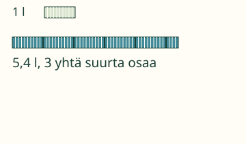
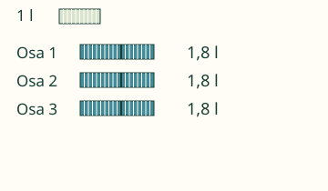
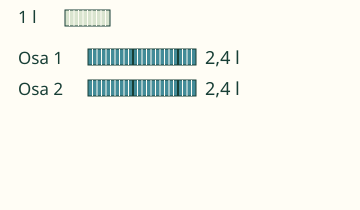
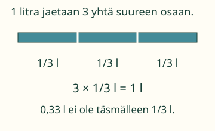
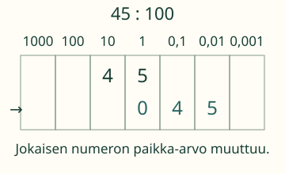

Loikka: 5,4 l tasan kolmeen osaan.
Jaa yhtä suuriin osiin.

Mitä kahdelle yli jäävälle kokonaiselle litralle voi tehdä? Mieti ennen vaihtoa.
Esimerkit ja selitykset
Vaihto tekee jakamisesta mahdollisen
5,4 l : 3. Ensin jokaiseen osaan 1 l. Yli jää 2 l ja 4 kymmenesosaa litraa. Ne ovat 24 kymmenesosaa. Kukin saa vielä 8 kymmenesosaa: 1,8 l. Tarkistus: 3 × 1,8 l = 5,4 l.

Yksi kokonainen saa pienentyä osiksi
4,8 l : 2 = 2,4 l. Kokonaiset ja kymmenesosat riittävät tasan. Mutta 1 l : 4 = 0,25 l: silloin kokonainen jaetaan vielä pienempiin osiin. Jakaminen ei tarkoita kokonaisiin pyöristämistä.

Tarkka vastaus voi olla murtoluku
1 l : 3 = 1/3 l. Kolme yhtä suurta osaa täyttää alkuperäisen litran. 0,33 + 0,33 + 0,33 = 0,99, joten 0,33 l olisi vain likiarvo. Tässä emme pyöristä.

Siirto mittayksikköön
75 cm on 75 sadasosaa metriä, sillä 1 m = 100 cm. Siksi 75 : 100 = 0,75 ja 75 cm = 0,75 m.

Kokeile itse
Voit vastata suoraan. Kuvaa tai apua saa käyttää.
Apua laskemiseen
Yksi kokonainen voidaan vaihtaa kymmeneksi kymmenesosaksi. Jaa kaikki yhtä suuriin osiin. Tarkista kertomalla yhden osan määrä osien määrällä. Murtoluku kuten 1/3 hyväksytään tarkkana vastauksena.
Luvun lopun nollat eivät muuta arvoa: 0,5 = 0,50. Voit kirjoittaa myös pisteen tai tarkan murtoluvun, kuten 1/2.
Mitä lukuja voin kokeilla?
Ensimmäinen määrä 0–999, enintään kolme desimaalia. Ryhmien määrä kokonaislukuna 1–1000. Nollalla ei voi jakaa. Yksikkömuunnoksessa annettua kerrointa ei voi vaihtaa.
Lisähaaste: perustele
Miksi 1 : 3 ei lopu desimaalina, vaikka 1 : 4 = 0,25 loppuu? Kokeile ensin jakaa paperinauha kolmeen ja neljään yhtä suureen osaan. Murtoluku pitää vastauksen tarkkana ilman loputonta kirjoittamista.
Opettajalle ja ilman ruutua
Vuosiluokat 3–6. Jakaja on tässä positiivinen luonnollinen luku. Nollalla jakamista ei määritellä: esimerkiksi mikään määrä kertaa0 ei ole1; 0 : 0 ei anna yksikäsitteistä määrää. 0 : 3 = 0 ja jako yhdellä säilyttää määrän. Kolmasosamalli on valinnainen jatko; perusjaot tuottavat päättyviä desimaaleja. Näyttö ei osoita todellista nesteen mittaamista tai itsenäistä jakolaskumenetelmää.
Käytä litran paperinauhoja ja niiden kymmenesosia. Jaa 5,4 l:n mallimäärä kolmeen. Vaihda kaksi yli jäävää kokonaisnauhaa 20 kymmenesosaksi. Aikuinen voi erikseen järjestää turvallisen kaatokokeen; selain ei mittaa nestettä.
Palaute on tämän sivun laskutukea. Tekninen syöteraja on128 merkkiä, murtoluvun osissa24 numeroa ja desimaalissa12 merkitsevää desimaalipaikkaa. Rajan ylitys hylätään, ei pyöristetä. Vastauksia ei tallenneta, eikä sivu arvioi oppilaan muistamista tai itsenäistä hallintaa. Pelireittejä ei tässä väitetä varmennetuiksi.
Lähtökysymys: Miksi 0 : 4 = 0 mutta 4 : 0 ei ole sallittu jako?